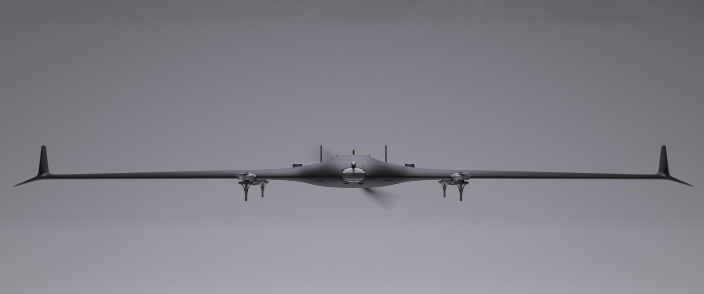

Part-level production record for TerraHawk FPV V1 Build 01. Weight, time, and filament totals will be added only after each print is completed and measured.
Printer: K1-White (Creality K1 Max)
Material: Polymaker PolyLite LW-PLA ↗ — White
Slicer: OrcaSlicer v2.4.2
Lightweight-part baseline: 1 wall; Wall Generator: Arachne; 4% Cubic infill; 45° orientation; mouse ears where required. Avoid Crossing Walls enabled with maximum detour length set to 0.
| Part | Side | Printer | Material | Slicer | Key Settings | Weight | Time | Filament | Status | Notes |
|---|---|---|---|---|---|---|---|---|---|---|
| ELEVON INNER | Left | K1-White (Creality K1 Max) | Polymaker PolyLite LW-PLA — White | OrcaSlicer v2.4.2 | 1 wall; Wall Generator: Arachne; 4% Cubic; 45° orientation; mouse ears; Avoid Crossing Walls on; max detour length 0 | 6 g | 49 min | 2.87 m | Complete | First accepted TerraHawk FPV Build 01 print. |
| ELEVON INNER | Right (mirrored) | K1-White (Creality K1 Max) | Polymaker PolyLite LW-PLA — White | OrcaSlicer v2.4.2 | 1 wall; Wall Generator: Arachne; 4% Cubic; 45° orientation; mouse ears; Avoid Crossing Walls on; max detour length 0; Height Range Modifier: 85–114.40 mm; modifier speeds: Outer Wall 35 mm/s, Inner Wall 50 mm/s, Sparse Infill 60 mm/s | 6 g | 50 min | 2.87 m | Complete | Mirrored Elevon Inner print accepted. |
| ELEVON OUTER | Left | K1-White (Creality K1 Max) | Polymaker PolyLite LW-PLA — White | OrcaSlicer v2.4.2 | 1 wall; Wall Generator: Arachne; 4% Cubic; 45° orientation; mouse ears; Avoid Crossing Walls on; max detour length 0; Height Range Modifier: 130–164.50 mm; modifier speeds: Outer Wall 35 mm/s, Inner Wall 50 mm/s, Sparse Infill 60 mm/s | 8 g | 1 h 17 min | 3.93 m | Complete | Elevon Outer print accepted. |
| ELEVON OUTER | Right (mirrored) | K1-White (Creality K1 Max) | Polymaker PolyLite LW-PLA — White | OrcaSlicer v2.4.2 | 1 wall; Wall Generator: Arachne; 4% Cubic; 45° orientation; mouse ears; Avoid Crossing Walls on; max detour length 0; Height Range Modifier: 130–164.50 mm; modifier speeds: Outer Wall 35 mm/s, Inner Wall 50 mm/s, Sparse Infill 60 mm/s | 8 g | 1 h 9 min | 3.92 m | Complete | Mirrored Elevon Outer print accepted. |
| WINGLET | Left | K1-White (Creality K1 Max) | Polymaker PolyLite LW-PLA — White | OrcaSlicer v2.4.2 | 1 wall; Wall Generator: Arachne; 4% Cubic; 45° orientation; mouse ears; Avoid Crossing Walls on; max detour length 0; no Height Range Modifier | 10 g | 59 min | 4.44 m | Complete | Left Winglet print accepted. |
| WINGLET | Right (mirrored) | K1-White (Creality K1 Max) | Polymaker PolyLite LW-PLA — White | OrcaSlicer v2.4.2 | 1 wall; Wall Generator: Arachne; 4% Cubic; 45° orientation; mouse ears; Avoid Crossing Walls on; max detour length 0; no Height Range Modifier | 9 g | 59 min | 4.52 m | Complete | Mirrored right Winglet print accepted. |